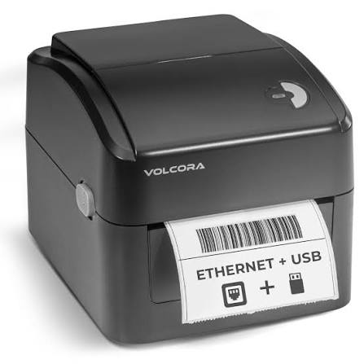

live stock levels
Every product shows its current quantity and shelf location, updated after each movement.
StockFlow is a warehouse management system that keeps stock records accurate from the moment a delivery arrives to the moment an order leaves.
Most stock problems start small A record is late, a move is not scanned, and the gap grows until nobody trusts the numbers.
Wrong records lead to wrong orders, late shipments, and hours spent counting by hand.
Every product shows its current quantity and shelf location, updated after each movement.
Scan a delivery, check it against the purchase order, and assign a shelf in one pass.
When a product falls below its level, the system raises an alert before the shelf is empty.
Quantities, stock values, and reorder status are grouped by category and ready to review.
Reviewed
A sample report, grouped by category. Every product shows its quantity, its stock value, and wether it needs reordering.
| Product | SKU | Quantity (units) | Stock value (TND) | Reorder status |
|---|---|---|---|---|
| Electronics | ||||
| Business laptop | LAP-001 | 12 | 21,600 | OK |
| Wireless Mouse | MSE-001 | 0 | 0 | Out of stock |
| Steel Shelving unit | SHF-001 | 8 | 1,760 | OK |
| Plastic storage Bin | BIN-001 | 90 | 360 | Reorder |
| Total units in stock | 137 | All categories | ||
| Total stock value | 31,580 | TND | ||
| Products needing reorder | 3 of 6 | |||
Products tracked by stockFlow, shown with their product codes.


A computer and a barcode scanner are enough to start. Label printers are optional.
Most warehouse enter their products and shelf location in a few days, then start receiving with the system.
Recount the item and check recent movements before changing anything. The workflow above explains how a daily count works.
Tell us your warehouse and we will prepare a demo for your team. Fields marked "required" must be filled in before sending.